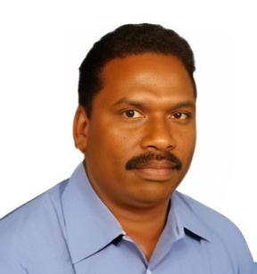
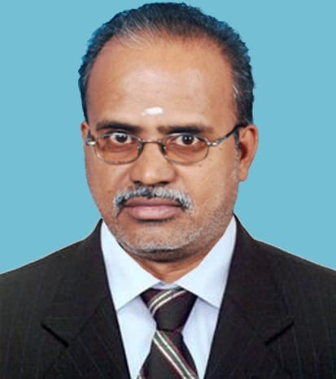
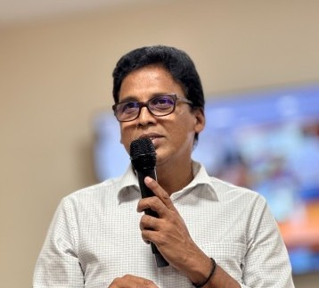
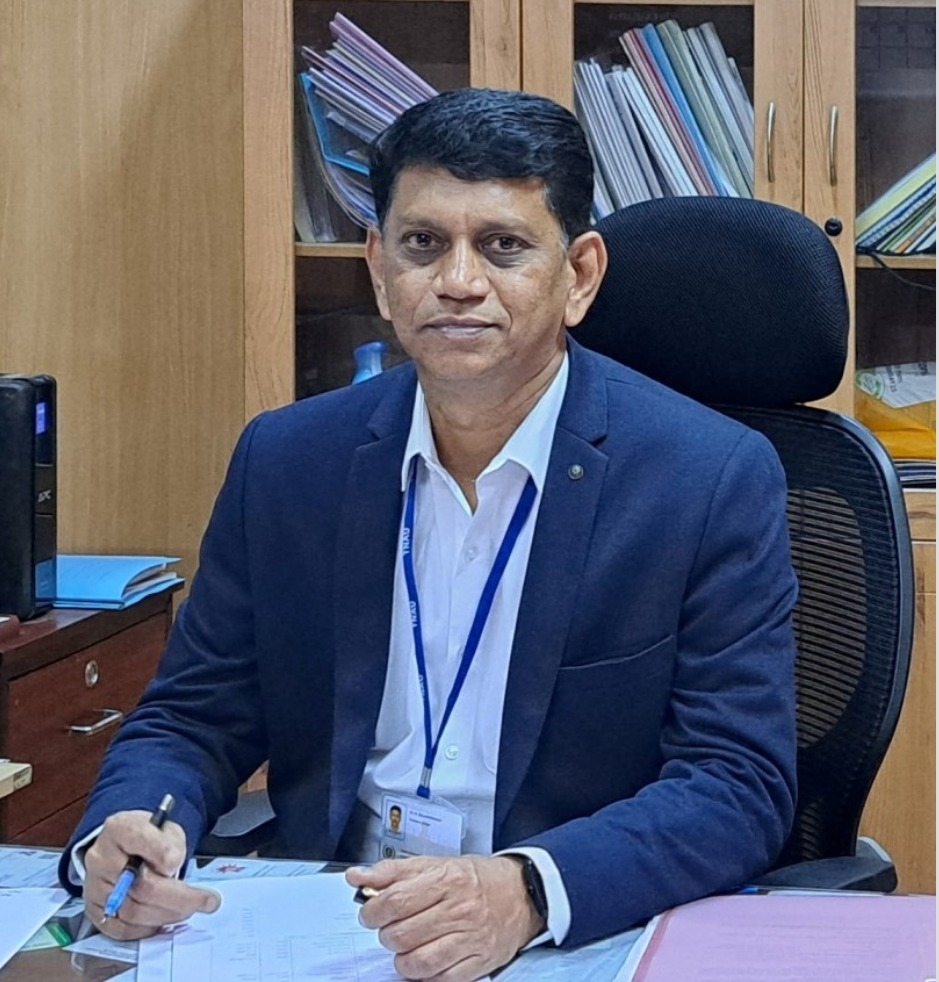

ICSSS-FoodXplore'25
Home
Abstract
Registration
Events
Committees
Venue
Accommodation
Gallery
Contact Us
Conference Committees
🌾 Conference Steering Committee
Chief Patron

Dr. K. Subrahmaniyan
Acting Vice-Chancellor & Registrar
Co-Patron

Dr. M. Raveendran
Director of Research
Convener

Dr. A. Raviraj
Dean, AEC & RI
Organizing Secretary

Dr. M. Balakrishnan
Professor and Head (FPE)
Joint Organizing Secretaries
Dr. A. Ramalakshmi
Professor
Dr. M. Anand
Associate Professor
Co-ordinators
Dr. R. Kavitha
Professor and Head (FMPE)
Dr. Balaji Kannan
Professor and Head (SWCE)
Dr. D. Ramesh
Professor and Head (REE)
Dr. S. Karthikeyan
Professor and Head (CPHT)
Dr. V. Thirupathi
Professor
Dr. T. Pandiarajan
Professor
Dr. P. Sudha
Assistant Professor
Dr. G. Amuthaselvi
Assistant Professor
Dr. S. Parveen
Assistant Professor
Dr. K. Gurusamy
Assistant Professor
Student Secretaries
Mr. P. Vijayakumar
Student Secretary
Final Year B.Tech (Food Technology)
Ms. K. S. Harshinie
Student Secretary
Final Year B.Tech (Food Technology)
Conference Advisory Committees
International Advisory Committee
Dr. Digvir S. Jayas, President and Vice Chancellor, University of Lethbridge, Alberta, Canada
Dr. Venkatesh Meda, Professor and Graduate Chair, Chemical & Biological Engineering, The University of Saskatchewan, Canada
Dr. R. P. Kingsly Ambrose, Professor, Department of Agricultural and Biological Engineering, Purdue University, West Lafayette, USA
Dr. Jong-Whan Rhim, Professor, Department of Food and Nutrition, Kyung Hee University, Seoul, South Korea
Dr. Sundaram Gunasekaran, Professor, University of Wisconsin-Madison, USA
Dr. V. M. Balasubramaniam, Professor, The University of Georgia, USA
Dr. Kumar Mallikarjunan, Director, Graduate Studies, University of Minnesota, USA
Dr. Kasiviswanathan Muthukumarappan, Professor, South Dakota State University, USA
Dr. Igathinathane Cannayen, Professor, North Dakota State University, USA
Dr. Buddhi P. Lamsal, Professor, Department of Food and Bioprocessing, Iowa State University, USA
Dr. Jun Tae Kim, Professor, Kyung Hee University, Seoul, South Korea
Dr. Chandrasekar Venkitasamy, Senior Environmental Scientist, Department of Food and Agriculture, Davis, California, USA
Dr. Manickavasagan Annamalai, Professor, University of Guelph, Canada
Dr. Ashutosh Singh, Professor, University of Guelph, Canada
Dr. Satyanaraya Dev, Professor & Chair, Florida A&M University, USA
Dr. Karunanidhi Chinnadurai, Senior Manager - R&D Engg, HP Hood LLC, USA
Dr. Johnselvakumar Lawrence, KS Lead Grain Researcher, Kansas, USA
Dr. Mohan Raj, Head of Operations, Coles Group, Melbourne, Australia
National Advisory Committee
Dr. Shyam Narayan Jha, DDG (Agrl. Engg.), ICAR, New Delhi
Shri. R. Anand, Chief General Manager, NABARD, Chennai
Dr. K. Alagusundaram, MD & CEO, TNAPEx, Chennai
Dr. Nachiket Kotwaliwale, Director, ICAR-CIPHET, Ludhiana
Dr. K. Narasiah, ADG (PE), ICAR, New Delhi
Prof. V. Palanimuthu, Director, NIFTEM-Thanjavur
Dr. Abhijit Kar, Director, ICAR-NISA, Ranchi, Jharkhand
Dr. R. Narendra Babu, Vice Chancellor i/c, TANUVAS, Chennai
Dr. N. C. Patel, Former Vice Chancellor, AAU, Anand, Gujarat
Dr. D. C. Joshi, Former Vice Chancellor, Kota Agriculture University, Rajasthan
Dr. R. K. Vishwakarma, Project Coordinator, AICRP - PHET, ICAR-CIPHET, Ludhiana
Mrs. G. Bhavani, Head, BIS, Coimbatore Branch Office, Coimbatore
Dr. V. V. Sreenarayanan, Former Dean, AEC & RI, TNAU, Coimbatore
Dr. S. Patel, Former Dean, Agril.Engg.IGKV,Raipur
Dr. Devinder Dhingra, Principal Scientist, Agrl. Engg. Division, ICAR, New Delhi
Dr. Sanjay K. Daash, Dean, CAET, OUAT, Bhubaneshwar
Dr. Prakash M Halami, Chief Scientist, CSIR-CFTRI, Mysore
Dr. D. Balasubramanian, PS, ICAR–Directorate of Cashew Research, Puttur
Dr. N. Varadharaju, Former Dean, AEC & RI, TNAU, Coimbatore
Dr. K. Thangavel, Director, Centre for Food Science and Tech., KITS, Coimbatore
Dr. R. Viswanathan, Former Professor and Head, TNAU, Coimbatore
Dr. S. Ganapathy, Professor (FPE)-Retired, TNAU, Coimbatore
Dr. Sandeep Mann, Head, ICAR-CIPHET, Ludhiana
Dr. Ravindra Naik, Head, ICAR-CIAE, Coimbatore
Dr. M. S. Baig, Associate Dean, Dr. NTR CFST, ANGRAU, Bapatla
Dr. Udaykumar Nidoni, Professor and University Head, DPFE, UAS, Raichur
Dr. M. R. Manikantan, Principal Scientist, ICAR-CPCRI, Kasaragod
Dr. M. S. Sajeev, Principal Scientist, ICAR-CTCRI, Thiruvananthapuram, Kerala
Dr. M. V. Prince, Professor and Head, DPFE, KCAET, Tavanur
Dr. K. P. Sudheer, Professor and Head, College of Agriculture, KAU, Thrissur
Dr. Heartwin Amaladhas, Principal Scientist, ICAR-NDRI, Bengaluru
Dr. S. Haripriya, Professor, Pondicherry University, Puducherry
Dr. Pankaj Singh Chauhan, Scientist - C, SHRI Cell, DST, New Delhi